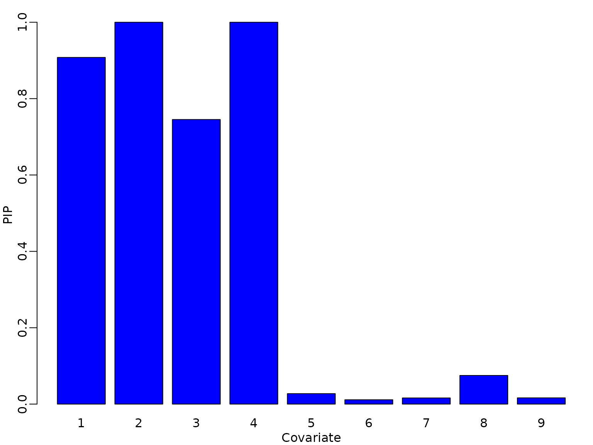

Chapter 12: Model Assessment and Predictive Model Checking
Chapter12.RmdSection 12.1: Beyond classical Bayesian model comparison
Section 12.1.1: Schwarz Criterion and BIC
Example 12.1. Labor Market Data: Bayesian Variable Selection using BIC
We return to the probit analysis of Example 11.11 and run variable selection using the Schwarz criterion instead of the marginal likelihood. We first implement this approach.
modsel_probit_BIC <- function(y,X,burnin = 1000L, M = 5000L){
n <- dim(X)[1]
p <- dim(X)[2] # change to X later
gamma_post <- matrix(ncol = p, nrow = M)
acc <- numeric(length = M)
gamma <- matrix(rep(1,p),nrow=1)
mod0<-glm(y~X, family=binomial(link = "probit"))
SC_old <- logLik(mod0) - log(n)*(p+1)/2
for (m in seq_len(burnin + M)) {
gamma_proposed <- gamma_old <- gamma
j <- sample(1:p, size=1)
gamma_proposed[j] <- 1-gamma_old[j]
X_gamma <- X[,gamma_proposed==1]
model<-glm(y~X_gamma, family=binomial(link = "probit"))
SC_proposed <- logLik(model) - log(n)*(sum(gamma_proposed)+1)/2
# compute acceptance probability and decide on acceptance
log_acc <- SC_proposed - SC_old
if (log(runif(1)) < log_acc) {
gamma <- gamma_proposed
SC_old <- SC_proposed
accept <- 1
} else {
gamma <- gamma_old
accept <- 0
}
if (m > burnin) {
gamma_post[m-burnin, ] <- gamma
acc[m-burnin] <- accept
}
}
return(list(gamma_post=gamma_post,acc=acc))
}We next load the data and as in exercise 11.11. add 5 irrelevant, standard normal regressors. Then we run the algorithm.
library("BayesianLearningCode")
data("labor", package = "BayesianLearningCode")
y <- labor$income_1998 == "zero"
N <- length(y)
X_unemp <- with(labor, cbind(female = female,
age18 = 1998 - birthyear - 18,
wcollar = wcollar_1997,
unemp97 = income_1997 == "zero")) # regressor matrix
p_irrel <- 5
set.seed(seed)
X <- cbind(X_unemp,matrix(rnorm(p_irrel*N),ncol=p_irrel))
colnames(X)[4+(1:p_irrel)]<-c("irrel1","irrel2","irrel3","irrel4","irrel5")
p<-dim(X)[2]
M <-20000
res <- modsel_probit_BIC(y, X, M=M)We determine the number of models visited during MCMC, the average model complexity, i.e. the average number of covariates included in the model and show the posterior inclusion probabilities.
if (pdfplots) {
pdf("12-1_1.pdf", width = 5, height = 6)
}
gammas_unique <- unique(res$gamma_post)
num_mod <- dim(gammas_unique)[1]
print(num_mod)
#> [1] 42
k_gamma=rowSums(res$gamma_post)
print(mean(k_gamma))
#> [1] 3.79915
# PIPs
print(colMeans(res$gamma_post))
#> [1] 0.90785 1.00000 0.74525 1.00000 0.02735 0.01135 0.01605 0.07500 0.01630
par(mfrow = c(1, 1), mar = c(2.5, 2.5, 1.5, .5), mgp = c(1.5, .5, 0))
barplot(colMeans(res$gamma_post), col="blue",names.arg=1:p,
xlab="Covariate",ylab="PIP")
To determine the model visited most often we re-use a function which we defined in Chapter 11.
number_draws<- function(gamma_post, models){
nmod <- dim(models)[1]
freq <- rep(NA,nmod)
for (j in (1:nmod)){
freq[j] <- sum(apply(gamma_post, 1,
function(x) identical(x, models[j,])))
}
return(freq)
}
freq_gammas<- number_draws(res$gamma_post,gammas_unique)
io <- order(freq_gammas, decreasing=TRUE)
knitr::kable(cbind(gammas_unique,freq_gammas/M)[io[1:5],],
digits=cbind(rep(0, p),4))| 1 | 1 | 1 | 1 | 0 | 0 | 0 | 0 | 0 | 0.6068 |
| 1 | 1 | 0 | 1 | 0 | 0 | 0 | 0 | 0 | 0.1742 |
| 1 | 1 | 1 | 1 | 0 | 0 | 0 | 1 | 0 | 0.0537 |
| 0 | 1 | 0 | 1 | 0 | 0 | 0 | 0 | 0 | 0.0494 |
| 0 | 1 | 1 | 1 | 0 | 0 | 0 | 0 | 0 | 0.0308 |